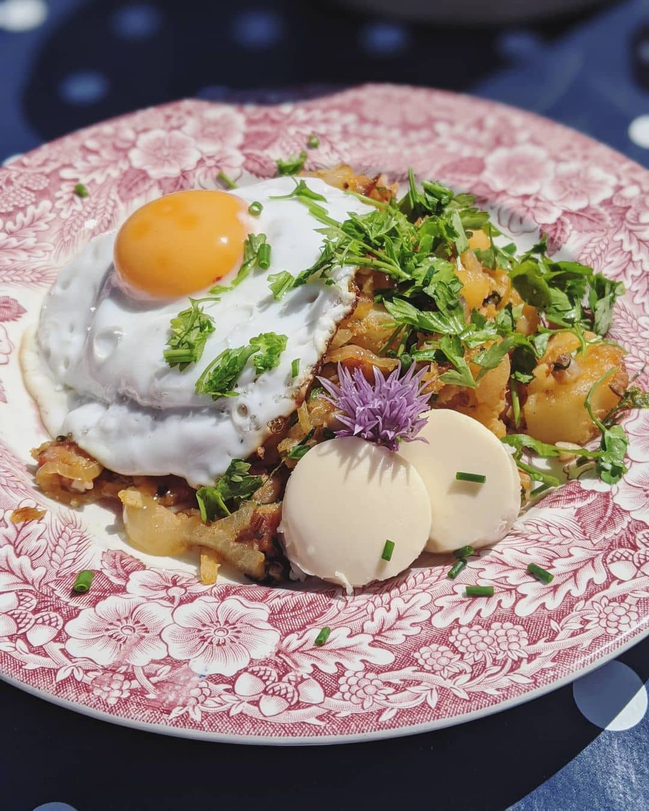

⚽️ The rules 🍲
The aim isn't to cook in support of a team, or to pick the winning team (although we like to keep track of how it ties in). It's to cook as wide a range of new dishes as possible, to learn new things about each country, and try new food. Aim to avoid repetition of teams as much as you can (some strategic choices during group stages come in handy here!).
For a better idea of how this works, have a look at one of the previous tournament sites:
If you'd like to stay right up to date I tend to add everything to instagram before it appears on this site.
Countries eaten
Wins eaten
Draws eaten
Losses eaten
Match 5: 15 June 2021
ó §ó ¢ğŸ‡ğŸ‡º Hungary vs 🇵🇹 Portugal
0-3
Arroz de Pato
...But speaking of meals that may make it into more regular rotation, this was very tasty. Thanks to Saxmundham not being able to provide the originally planned salt cod, plus a recommendation from Adam we ended up enjoying this ducky chorizo feast.
It baaaasically followed the (translated) recipe below, but for extra flavour we used a whole duck and stripped the meat rather than using breasts, plus generally did tweaks to taste with seasoning and spices.
Match 4: 14 June 2021
ğŸ´ó §ó ¢ó ³ó £ó ´ó ¿ Scotland vs 🇨🇿 Czech Republic
0-2
Cullen Skink
Back home, and a chance to actually cook some proper dinners as the game was originally intended! I came back via a walk/beach sit in Covehithe and a detour to Southwold for fish and chips, plus I was hoping to pick up some smoked haddock. Alas, Monday was fishmonger off day it seemed, so it was back to making the most of what I could get from a supermarket (shout out to Saxmundham Tesco).
I used the following recipe, which was... fine. But I'll admit, I did chuck in a fair bit of absolutely-not-Scottish dashi to stop it from being quite so bland. I also wouldn't cook the fish in water, I'd probably just go straight to using the milk if I did this again. Outside of that it was tasty enough, but probably not one that I'll do regularly.
Match 3: 13 June 2021
🇦🇹 Austria vs 🇲🇰 North Macedonia
3-1
Tiroler Gröstl
I'd like to thank past me for having the foresight to plan for Tiroler Gröstl brunch as a hangover cure. There were some evil, evil cocktails last night, and this was very welcome this morning.
This dish is one of my staples of Austrian ski times, and it's very simple but very tasty. I also bought some smoked Austrian cheese after seeing it in the local supermaket when we bought supplies, and despite being totally unnecessary that also added something extra.
Match 2: 12 June 2021
🇩🇰 Denmark vs 🇫🇮 Finland
0-1
Kanelsnegle

My brother had rudely rebooked his postponed wedding for today (no consideration for those of us trying to watch football and cook things). He also tried to feed me mushrooms for dinner, so I'm not sure we're really even related any more. However, this meant it was another early one.
Since yesterday I'd had more of a root around in the Airbnb kitchen and managed to find a massive measuring jug bowl which made making dough a bit easier than in the saucepan of day 1. Still used ramekins for amounts and played it a bit by eye with the flour as it all felt too sticky, but somehow everything worked out fine.
These buns were absolutely delicious, and were really easy to make around getting ready; switching over to have a shower when it needed to rest etc. It made a good pre-wedding snack, and I was genuinely intending to stash some in my car in case I wanted one in the evening, but sadly forgot.
Was so sad to hear about Christian Eriksen collapsing during the match, never nice to see anything like that happening. Hope he makes a full recovery.
Match 1: 11 June 2021
🇹🇷 Turkey vs 🇮🇹 Italy
0-3
Gözleme

A pandemic may have postponed things, but I'm finally back for another year. The first couple of weeks are going to be a bit bumpy as I'm not going to be not at home much and will be winging it in terms of ingredients and equipment, but that's kind of half the fun nowadays!
Today is Gözelme: Turkish flatbread stuffed with spinach and "feta" (local shop didn't have feta, first bit of improv).
Considering I made the dough without any measuring apart from a ramekin I found in a cupboard, and had to bring it together in a saucepan, I'm pretty pleased. Pretty tasty lunch snack, would make again.